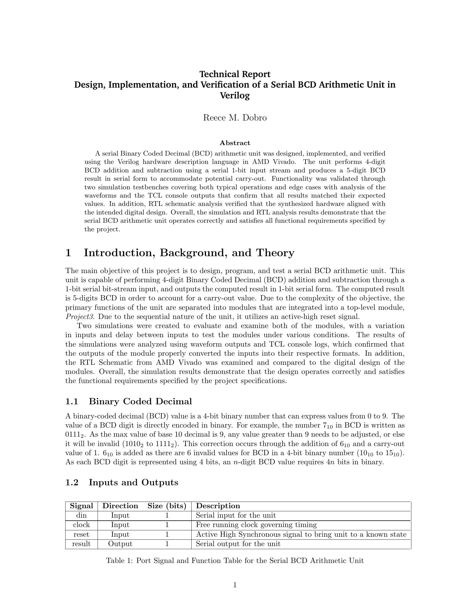
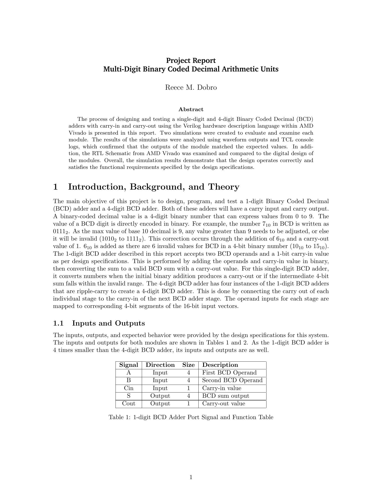
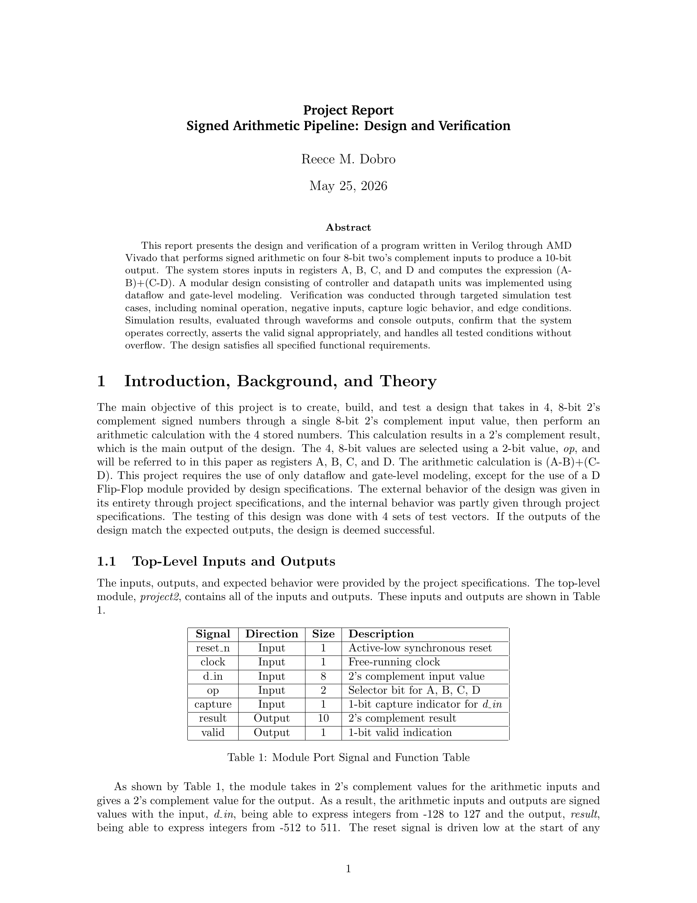
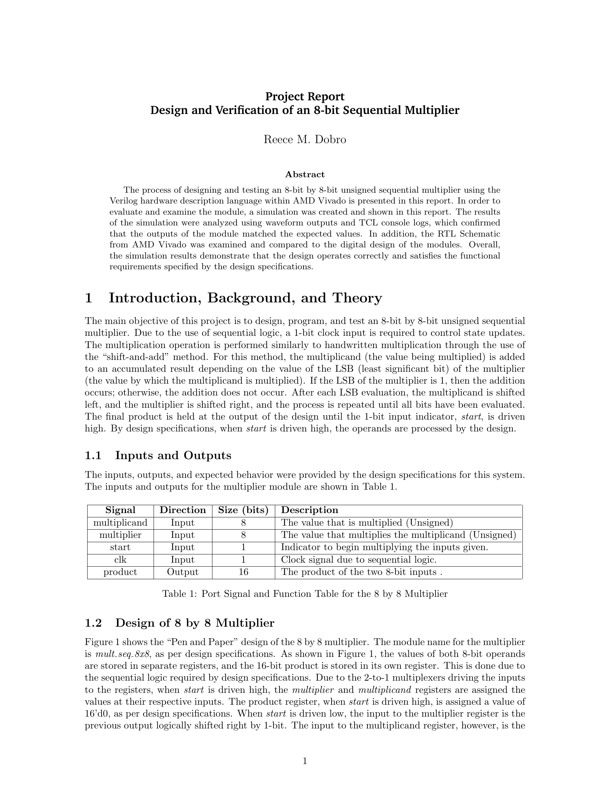
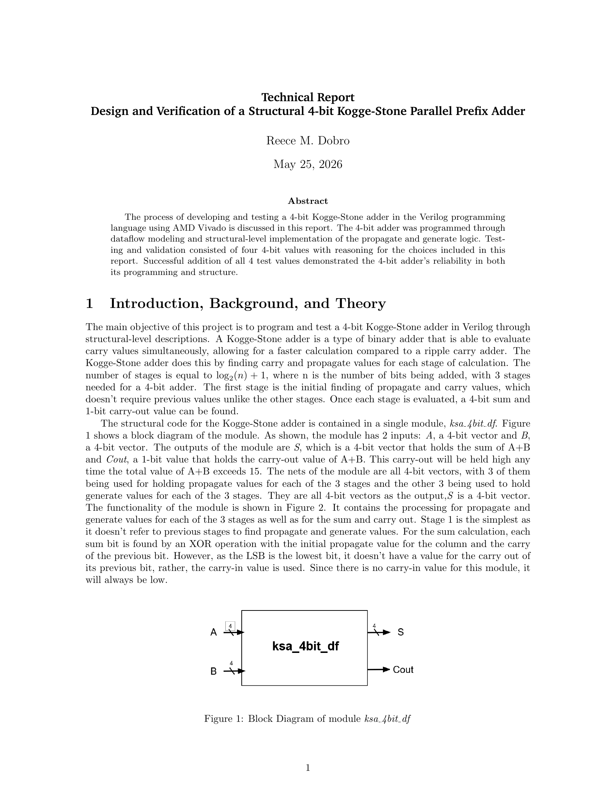
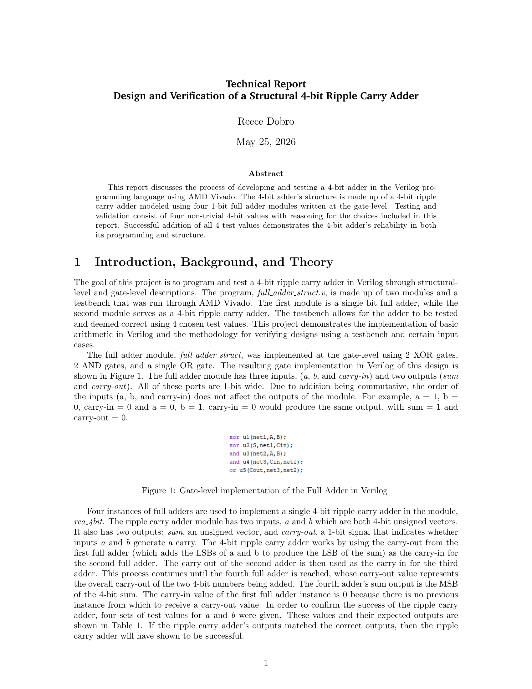
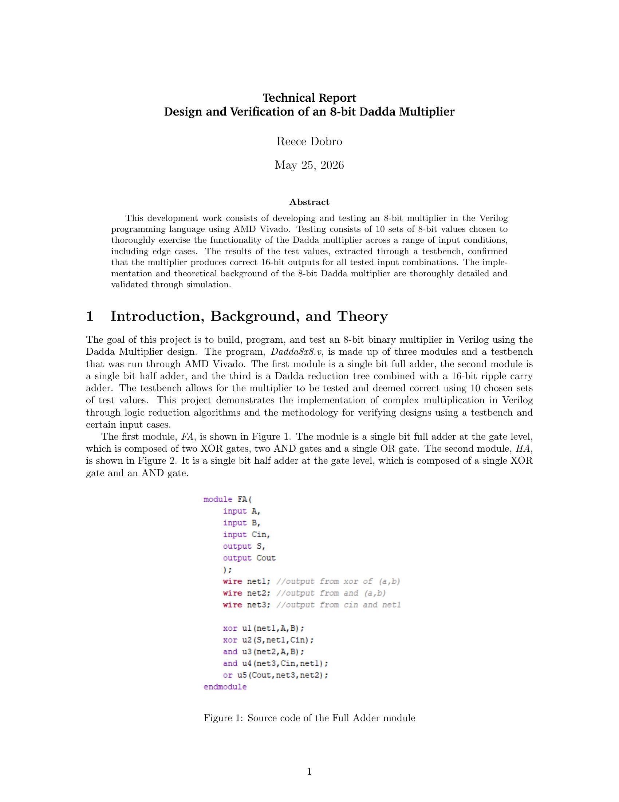
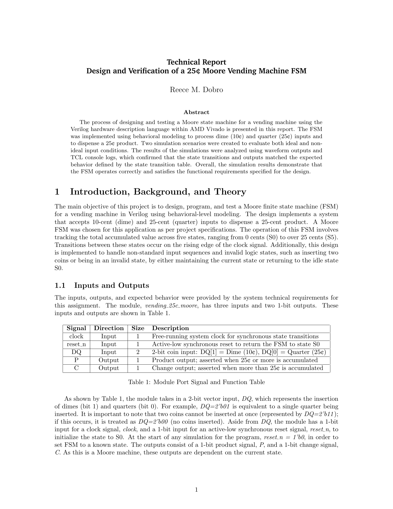
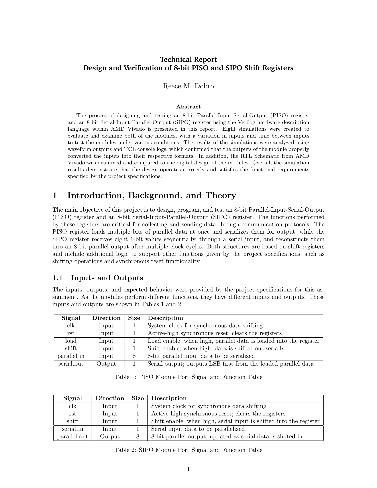

Serial BCD Arithmetic Unit
Design and verification of a serial BCD arithmetic unit.

Multi-Digit BCD Arithmetic Units
Scalable BCD arithmetic architecture design.

Signed Arithmetic Pipeline
Pipeline-based signed arithmetic design.

8-bit Sequential Multiplier
Sequential multiplier architecture.

4-bit Kogge-Stone Adder
High-speed parallel prefix adder design.

4-bit Ripple Carry Adder
Structural ripple carry implementation.

8-bit Dadda Multiplier
Dadda tree multiplier optimization.

25¢ Moore FSM Vending Machine
Finite state machine design.

8-bit PISO & SIPO Shift Registers
Serial/parallel shift register design.